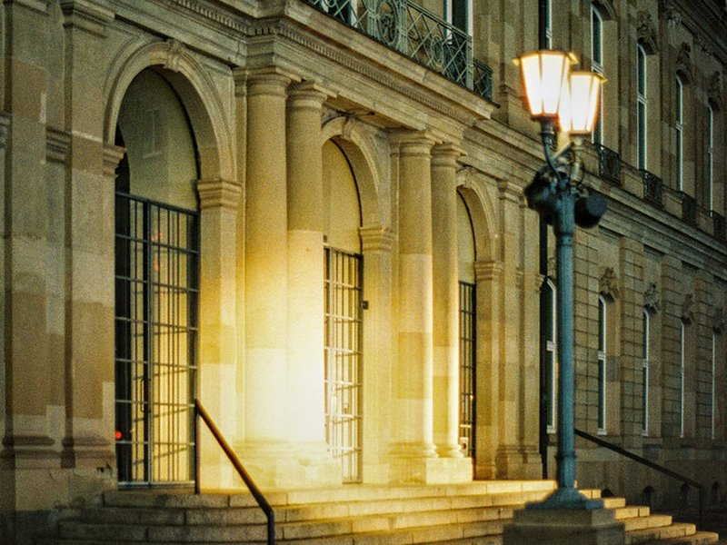
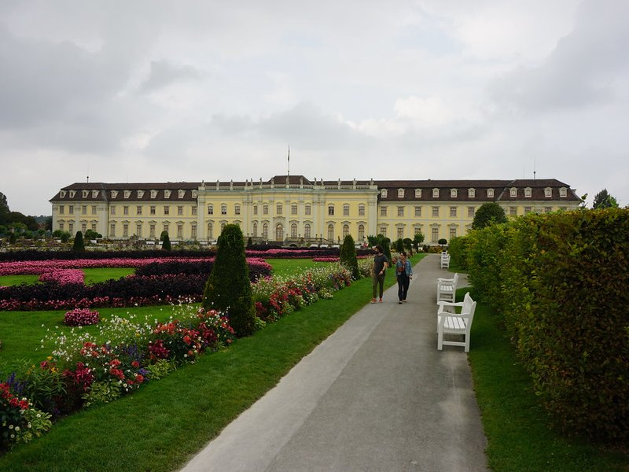
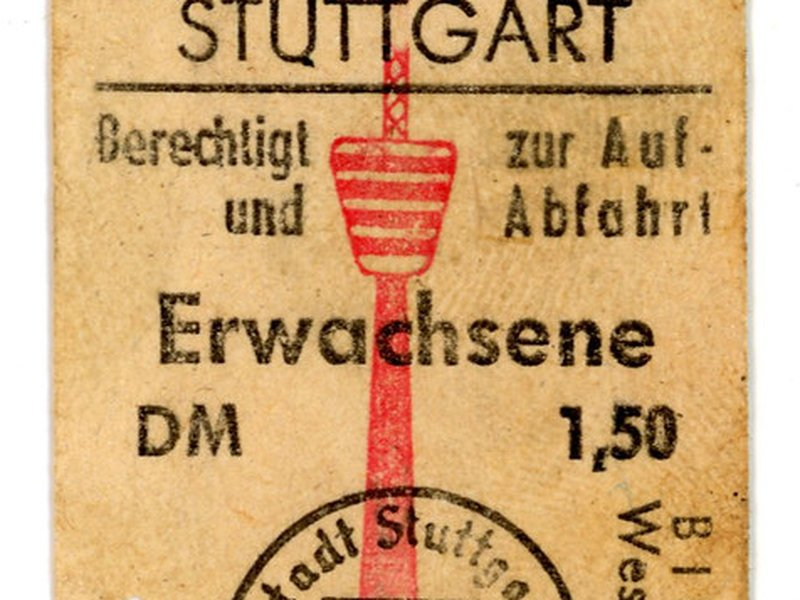
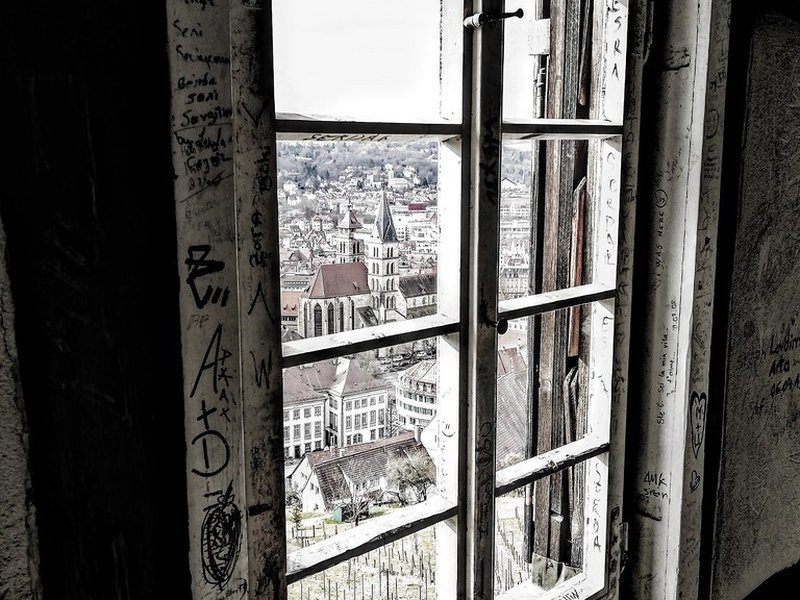
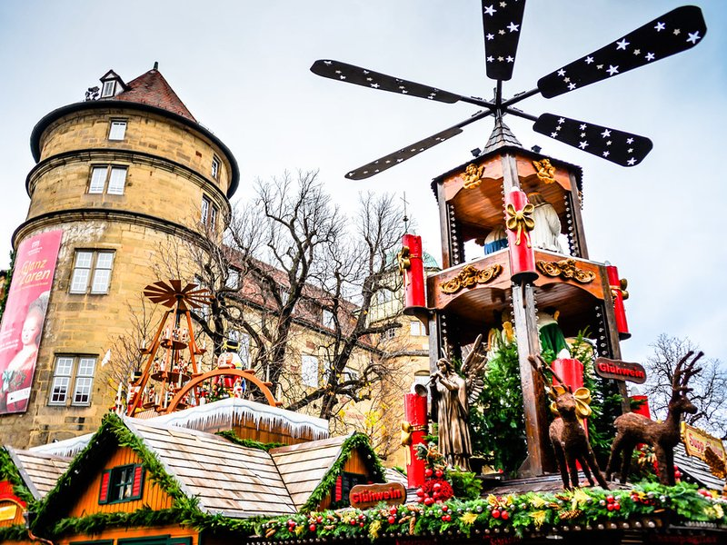
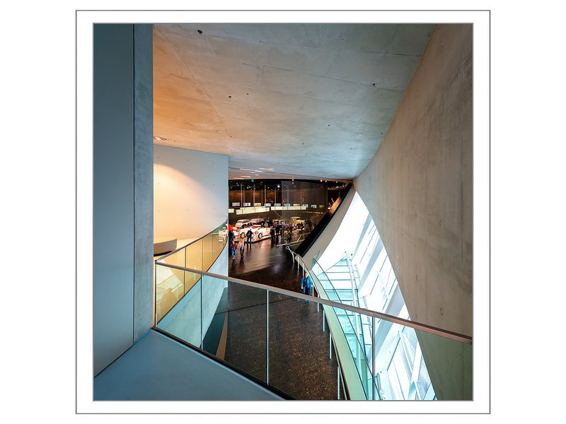

Explore Stuttgart
A Brief History
Stuttgart, nestled beautifully in a fertile valley of ancient vineyards, originated as a humble 10th-century stud farm. It grew to significant cultural prominence as the opulent royal seat of the Kings of Württemberg, who adorned the flourishing city with sprawling, elegant parks and grand classical palaces. In the late 19th century, it revolutionized global history by birthing the automobile industry through pioneers like Gottlieb Daimler and Carl Benz. Today, it remains an engineering powerhouse, seamlessly blending its aristocratic past with cutting-edge technological innovation.
Attractions Map
Top Sights & Activities

Schlossplatz and Neues Schloss
A short journey from the Mercedes-Benz Museum back on the S-Bahn, Schlossplatz and Neues Schloss serve as the heart of Stuttgart’s vibrant city life. This area is more than just a historical site; it’s a dynamic space where centuries-old architecture meets modern-day leisure. The Schlossplatz, with its sprawling lawns and fountains, offers a perfect setting for a leisurely stroll or a picnic.

Ludwigsburg Residential Palace
Keep an eye on the time so you can make it to Ludwigsburg Residential Palace in time for the 3:15pm English tour. You’ll need to walk to Stuttgart Hauptbahnhof and from here, it’s a ten minute train ride to Ludwigsburg. On arrival in Ludwigsburg, it’s a lovely 20-minute walk to the palace or you can take a bus.

Stuttgart TV Tower
It’s time to head back to Stuttgart to see as much of it as you can at the Stuttgart TV Tower. You’ll need to get the train back to Stuttgart Hauptbahnhof then transfer to the U-Bahn. As the world’s first telecommunications tower built from reinforced concrete, it’s not just an engineering marvel but also offers unmatched panoramic views of Stuttgart and beyond.

Esslingen Old Town
For the perfect ending to your day exploring Stuttgart, head to Esslingen for dinner. This medieval town is just a short train ride away and boasts a beautiful old town that beautifully illuminates in the evening, setting a magical scene for your dining experience. Esslingen is renowned for its local cuisines and cozy, traditional restaurants dotted around its historic center.

Altes Schloss and the Württemberg State Museum
Across the road from Schlossplatz lies the historic Altes Schloss, which houses the Württemberg State Museum. This ancient castle, dating back to the 10th century, has been meticulously maintained, offering a glimpse into the region’s rich and tumultuous history. The museum’s collection is vast and well-preserved, featuring artifacts that span from the Stone Age to modernity.

Mercedes-Benz Museum
Stuttgart is famous for being the home of the automotive industry so exploring this past is a great way to start the day. The Mercedes-Benz Museum opens its doors at 9am and I recommend you arrive right on opening to get the most from your day in Stuttgart. This museum offers a deep dive into the evolution of the automobile, featuring an extensive collection of over 160 vehicles.